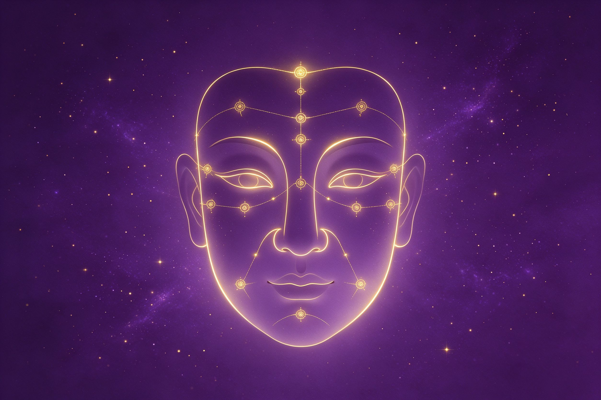
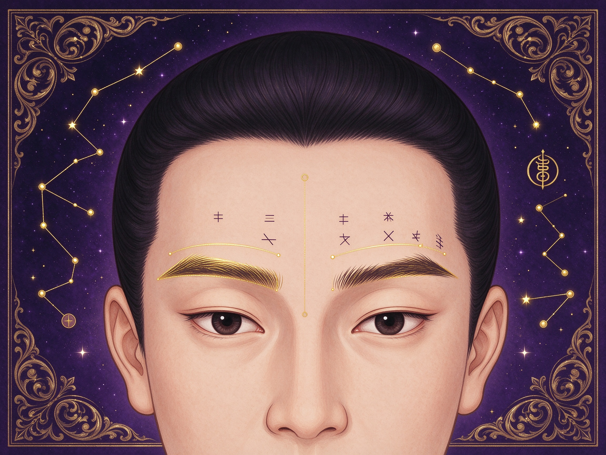
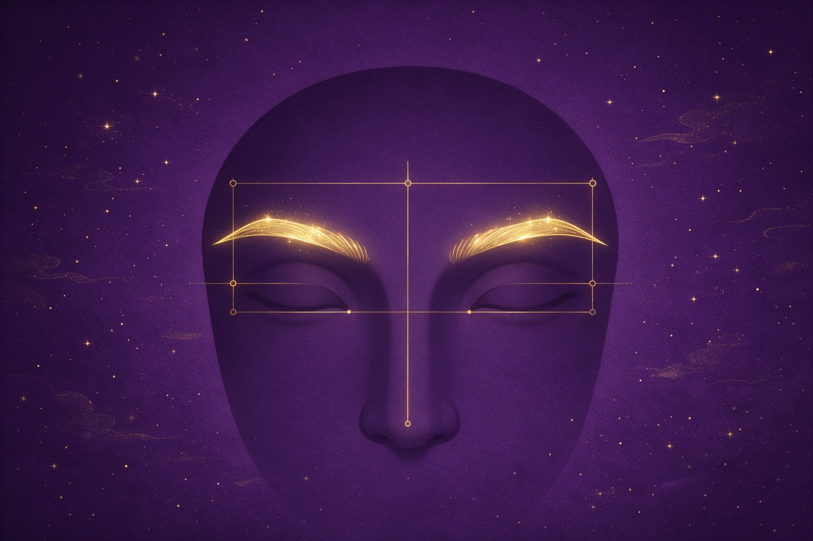
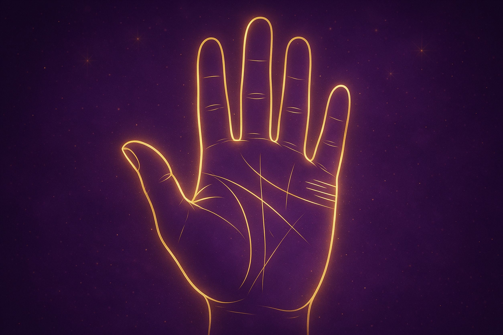
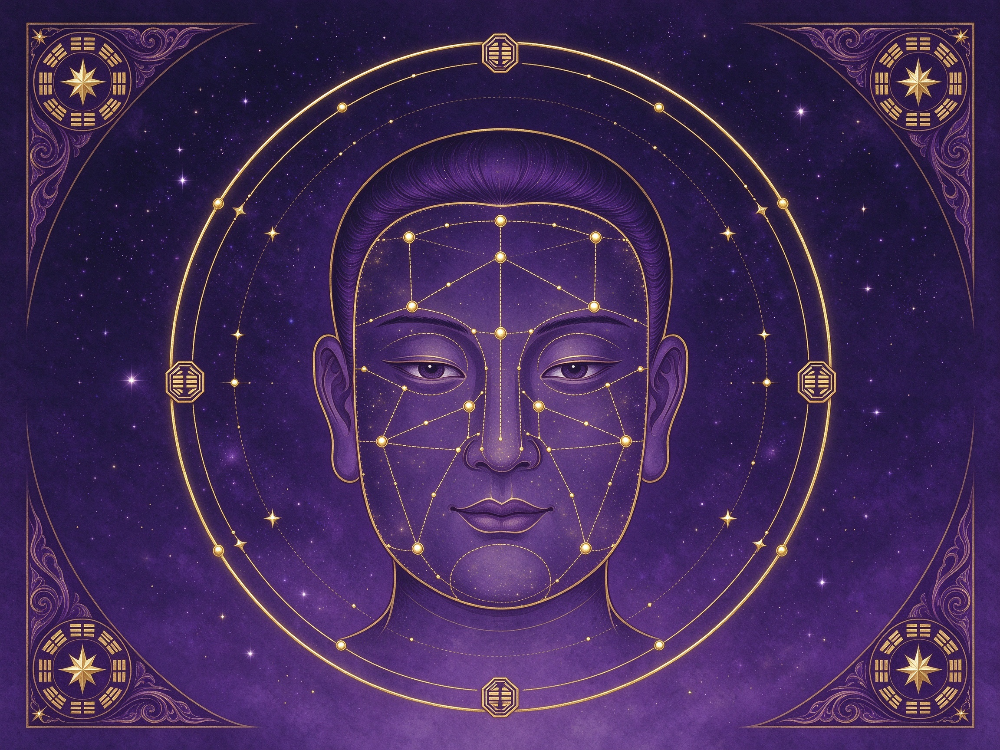
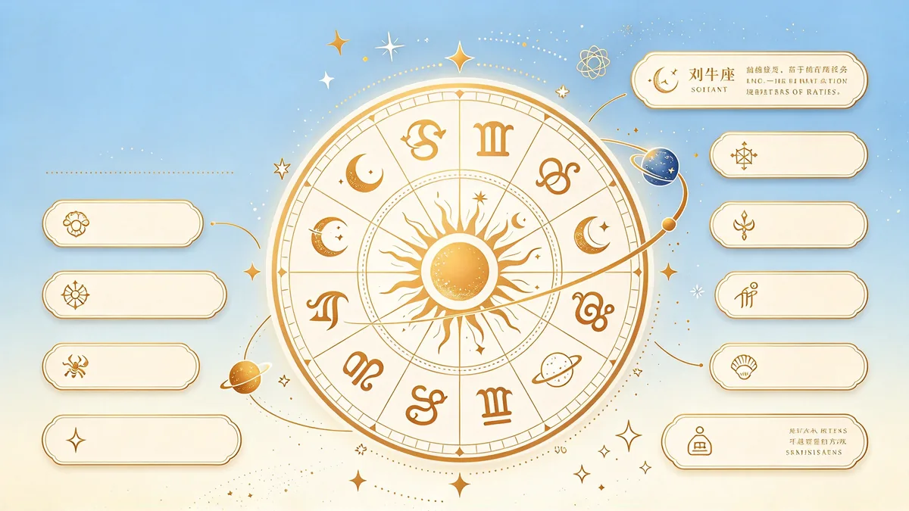
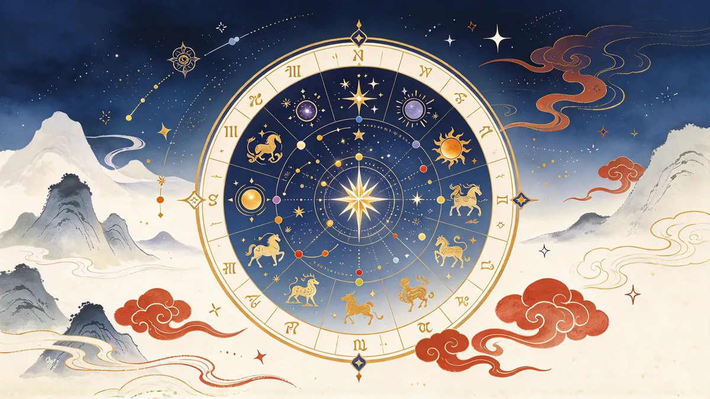
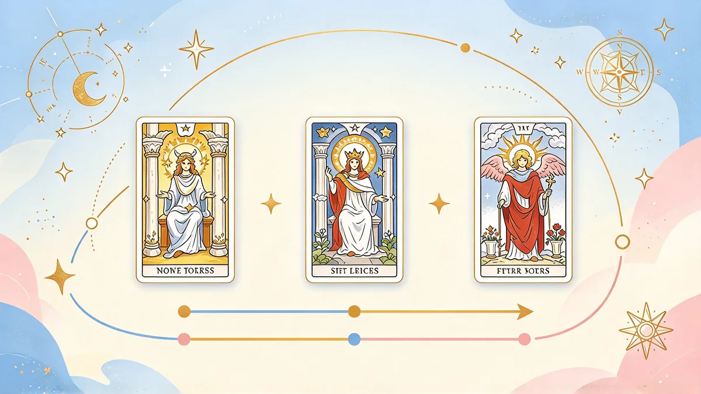
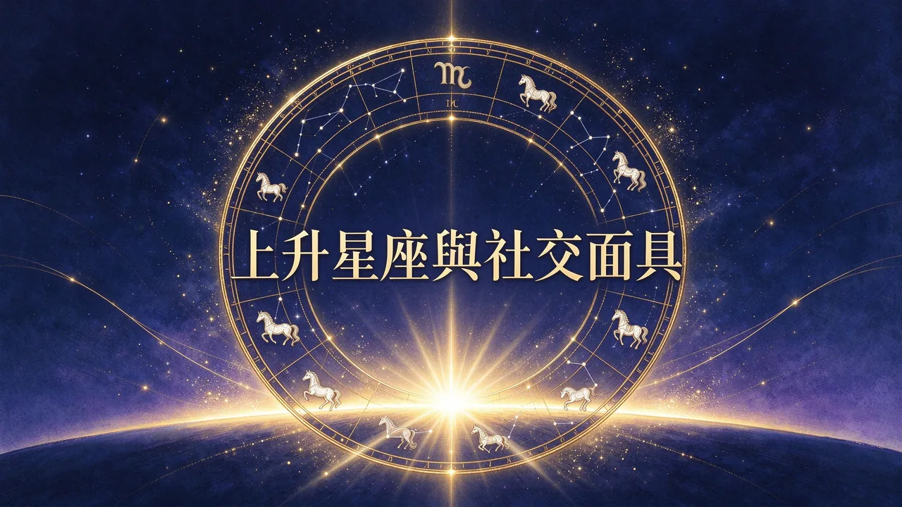
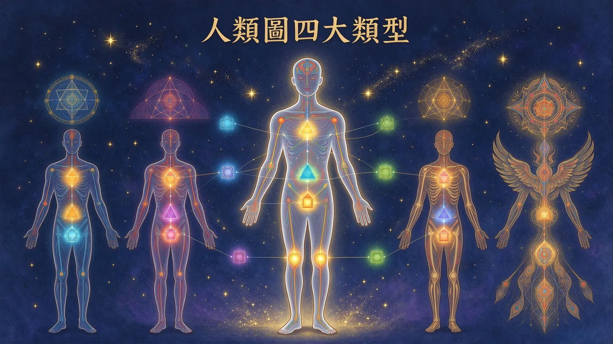

東方命理 × 人類圖 知識庫
從八字四柱到紫微斗數、奇門遁甲、易經卦象，再到西方人類圖，五大專業百科全站整合，自由穿梭。
東方命理 × 易經占卜 × 觀形相學
念十回 の 星靈宇宙融通東西兩大命理傳統。點擊任一體系，認識其原理並連結對應專業主題。

一. 以「出生時間」為核心
以出生的年月日時為根基，排出命盤，論五行生剋與格局，是華人命理最主流的一脈。
查看體系 →
二. 以「易經卦象」為核心
以易經卦象起卦斷事，是問事決策與趨吉避凶的古老智慧。
查看體系 →
三. 以「手面相」為核心
透過五官、掌紋與身形觀察性格與運勢，屬觀形之術。
查看體系 →
四. 以「文字符號」為核心
由文字與姓名的筆畫、五行拆解命理，東方獨特的象意之學。
查看體系 →
五. 風水堪輿（環境）
觀居住與祖先環境以調和氣場，分巒頭與理氣兩大脈。
查看體系 →
六. 其他民俗類
西方體系與民間信仰儀式，近年華人圈亦常見。
查看體系 →手面相精選 6 篇
從面相十二宮到掌紋主線，認識五官手紋背後的性格、人緣與運勢線索。點擊標題展開全文。

面面相十二宮是什麼？
快速看懂你的五官格局：命宮、財帛宮、兄弟宮、田宅宮、官祿宮、遷移宮、疾厄宮、交友宮、福德宮、父母宮、夫妻宮、子女宮。

掌掌紋五大主線
生命線、智慧線、感情線完整解析。線條深淺、中斷、島紋、分叉都有不同意涵，左右手分別代表先天本命與後天發展。

眉眉相怎麼看？
眉型、眉濃淡、雜毛代表的含義。眉為保壽宮，代表人際、膽識與思考邏輯。眉氣順與否才是重點。

婚手相婚姻線
數量、長短、分叉、島紋解讀。婚姻線看的是親密緣分的品質，不能單憑一條線直接斷定婚期與離合。
鼻鼻相財帛宮
山根、鼻準、鼻翼看財運與守財。鼻相重視「正、潤、不歪斜」，不是越大越好，搭配整體格局參考才準確。

則手面相入門原則
先天格局，後天修相改運。相由心生，心性、習慣、選擇會慢慢改變氣色、手紋與神態。相不獨論。
現在是什麼星象？

♏ 天蠍座
洞察力敏銳的一天，適合深入分析與解決難題。

月亮進入天秤座
情感與直覺敏銳，適合傾聽內在、陪伴家人。

戀人
The Lovers — 真愛降臨，和諧結合，重大抉擇。
最新文章
如何透過每日塔羅抽牌自我覺察

上升星座：你的『社交面具』與人生起點
